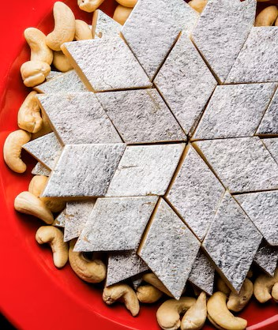

Gulab Jamun
Ingredients
- 1. 1 cup milk powder (दूध पाउडर)
2. 1/2 cup all-purpose flour (मैदा)
3. 1/4 teaspoon baking soda (बेकिंग सोडा)
4. 1/4 teaspoon salt (नमक)
5. 1/4 cup ghee or oil (घी या तेल)
6. 1/2 cup lukewarm milk (गुनगुना दूध)
For Sugar Syrup:
- 1. 1 cup sugar (चीनी)
2. 1 cup water (पानी)
3. 1 tablespoon rose water (गुलाब जल)
4. 1 tablespoon cardamom powder (इलायची पाउडर)
Instructions/process(विधि):
Step 1: Make Jamun
- 1. Mix milk powder, flour, baking soda, and salt.
2. Add ghee or oil and mix well.
3. Gradually add lukewarm milk to form a dough.
4. Knead for 5-7 minutes.
5. Cover and rest for 30 minutes.
Step 2: Shape Jamun
- 1. Divide dough into small balls (about 20-25).
2. Shape each ball into a smooth sphere.
Step 3: Fry Jamun
- 1. Heat oil in a deep frying pan.
2. Fry jamun until golden brown (about 3-4 minutes).
3. Drain excess oil.
Step 4: Make Sugar Syrup
- 1. Combine sugar, water, rose water, and cardamom powder.
2. Heat until sugar dissolves.
3. Bring to a boil, then reduce heat.
Step 5: Soak Jamun
- 1. Add fried jamun to sugar syrup.
2. Soak for at least 30 minutes.
Tips (सुझाव):
-
1. Use fresh milk powder for best results.
2. Adjust sugar syrup consistency as needed.
3. Serve gulab jamun warm or chilled.
Help by Chef Ranveer

KAJU KATLI
Ingredients:
- - 1 cup cashews
- 1/2 cup granulated sugar
- 1/4 cup ghee (clarified butter)
- 1/4 teaspoon cardamom powder
- 1/4 teaspoon saffron threads (optional)
- Silver foil or vark (optional)
Instruction/Process
-
1. Soak cashews in water for 4-5 hours. Drain and grind into a fine paste.
2. Heat ghee in a non-stick pan over medium heat.
3. Add cashew paste and cook, stirring constantly, until it thickens (about 10-12 minutes).
4. Add sugar, cardamom powder, and saffron threads (if using). Mix well.
5. Cook, stirring constantly, until the mixture thickens and turns light golden brown (about 5-7 minutes).
6. Remove from heat and let cool slightly.
7. Knead the mixture until smooth.
8. Roll out into a thin sheet (about 1/4 inch thickness).
9. Cut into diamond-shaped pieces or rolls.
10. Wrap in silver foil or vark (if using).
Tips
- - Use high-quality cashews for best results.
- Adjust sugar to taste.
- Add a pinch of salt to balance flavor.
- Use rosewater or kewra essence for a different flavor.
- Add chopped nuts or dried fruits for added texture.
Help by Chef Ranveer
